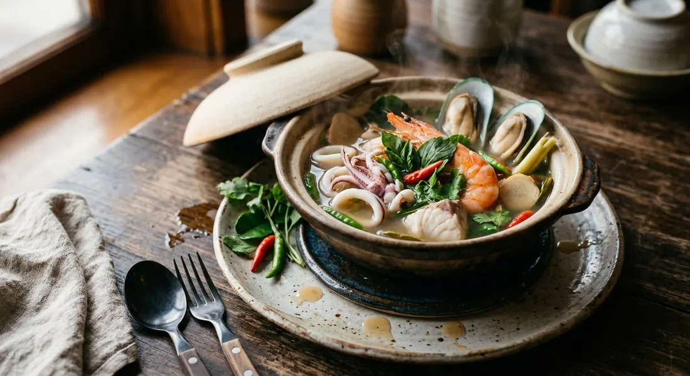

Lemongrass and chilli pounded coarse, then fish, prawns, mussels and squid in a clear lime-sharp broth — holy basil dropped in last, the moment the pot comes off the flame.

The name is the story. Wongnai's food desk explains it: a โป๊ะ (poh) is the wooden box-trap fishermen moor off the shore — and แตก means broken. When the trap gives way, everything inside it spills out at once into the pot. The dish, then, is the whole catch in one pot: prawns, fish, mussels, squid, crab if the trap was kind.
Everyone who writes about po-taek in Thai starts from the same comparison: it is tom yum's clear, louder cousin. Kapook's recipe — a Pantip home cook's — is blunt about the difference. In po-taek the aromatics are pounded, chillies and lemongrass and shallots broken up in the mortar, where tom yum leaves its herbs whole and slices them politely. That pounding is the whole point: Kapook says the broth comes out smelling of crushed lemongrass and chilli in a way plain tom yum never does. And the second signature: holy basil (ใบกะเพรา), a handful into the pot right at the end.
The recipe is a folk recipe, so the schools differ on details — fingerroot here, dried chillies there, a stock cube or none — but the skeleton never moves: clear broth, pounded aromatics, mixed seafood, lime at the last second, holy basil on top.
| Thai | English | Amount |
|---|---|---|
| น้ำเปล่า | Water | 1 litre |
| ตะไคร้ | Lemongrass, bruised and pounded | 2–3 stalks |
| ข่า | Galangal, sliced | 4–5 slices |
| ใบมะกรูด | Kaffir lime leaves, torn | 4–5 |
| หอมแดง | Shallots | 3–4 |
| รากผักชี | Coriander roots | 2 |
| พริกขี้หนูสวน | Bird's eye chillies | 10–15 |
| กุ้ง | Prawns | 200 g |
| ปลาหมึก | Squid, scored and cut | 150 g |
| เนื้อปลากะพง | White fish fillet (sea bass) | 150 g |
| หอยแมลงภู่ | Mussels | 150 g |
| เห็ดฟาง | Straw mushrooms, halved | 100 g |
| ใบกะเพรา | Holy basil leaves | 20 g (a good handful) |
| น้ำปลา | Fish sauce | 2–3 tbsp |
| น้ำมะนาว | Lime juice | 3–4 tbsp |
| น้ำตาล | Sugar | ½–1 tbsp |
The Wongnai pot: 2 cups water, 5 galangal slices, 1 stalk lemongrass, 5 kaffir leaves, 1 tbsp seasoning powder, 2 coriander roots and 5 red spur chillies for the broth — over 100 g NZ mussels, 80 g sea bass, 80 g squid, 80 g prawns and 30 g straw mushrooms, seasoned with 2 tbsp fish sauce, 3 tbsp lime juice and 1 tbsp sugar. The Knorr pot: 2½ cups water, two tom yum stock cubes, 100 g grouper, 50 g each of prawns, squid and mussel meat, 100 g straw mushrooms, five bruised bird's eye chillies. The Cookpad pot: 300 g prawns, 300 g squid, 200 g straw mushrooms, dried and fresh chillies, a stock cube and a pinch of coconut sugar — seafood blanched first, holy basil at the end. The Kapook pot: prawns, fish, crab and squid, the squid held back until last, seasoned with nothing but salt or fish sauce and lime.
The pound. Kapook pounds chillies, shallots, lemongrass and coriander root together — and says the pounding is exactly what makes po-taek smell the way it does. Aroifin pounds only garlic and bird's eye chillies, then adds sliced fingerroot (กระชาย) and sawtooth coriander. Wongnai, Knorr and Cookpad skip the pestle altogether and drop whole sliced tom yum herbs in the pot. All three approaches still call the dish po-taek.
The stock shortcut. Knorr builds its broth on two tom yum stock cubes, Cookpad on one, and Wongnai stirs in a spoon of seasoning powder. Kapook and Aroifin use none of it — just fish sauce (or salt), lime and a pinch of sugar. The old-style pots taste cleaner; the shortcut pots taste deeper from the first spoonful.
When the seafood cooks. Aroifin and Cookpad blanch the seafood in the boiling water first, lift it out, and build the broth in the same water — the seafood only meets the finished soup in the bowl. Kapook, Wongnai and Knorr cook everything in the broth itself, in order. Both camps agree the squid goes last.
The lime. Aroifin's tip is a rule: never add lime juice while the pot is boiling — the sourness dies and the aroma goes. Wongnai seasons with lime while the soup still simmers. Kapook adds it with the basil, at the very end, which lands on Aroifin's side of the argument.
The chilli. Cookpad uses dried chillies plus fresh jinda chillies; Aroifin and Knorr use fresh bird's eye; Wongnai uses the milder red spur chilli (พริกชี้ฟ้า), five of them, which makes its pot the gentlest of the six. Kapook just says พริก — chillies from the cook's own garden, the recipe's original spirit.
This recipe is translated from the following Thai-language sources. Where they disagree, we've said so.
1. Kapook Cooking — "วิธีทำโป๊ะแตก ยกทะเลมาไว้ในชาม หอมอร่อยแซ่บโดนใจ" (the Pantip home recipe by คุณมอแกนน้อย; the coarsely pounded aromatics) — cooking.kapook.com
2. Wongnai — "วิธีทำ ต้มยำโป๊ะแตกทะเล เมนูต้มรสแซ่บซี๊ด" by จิ๋วหิวโซ (the measured restaurant-style pot) — wongnai.com
3. Aroifin — "วิธีทำ โป๊ะแตกทะเล กุ้ง หอย ปลาหมึกแน่น แซ่บซี้ด อร่อยง่าย" (the fingerroot pot; the lime-off-the-heat rule) — aroifin.com
4. Knorr Thailand — "ต้มยำโป๊ะแตก" (the stock-cube pot) — knorr.com
5. Cookpad — "สูตร โป๊ะแตก" by ครัวพี่ขันธ์ (the blanched-seafood pot with dried chillies) — cookpad.com
6. Wongnai Food Tips — "'โป๊ะแตก' คืออะไร มีที่มาจากไหน ทำไมถึงเรียก 'โป๊ะแตก'?" (the name: the broken poh fish trap) — wongnai.com